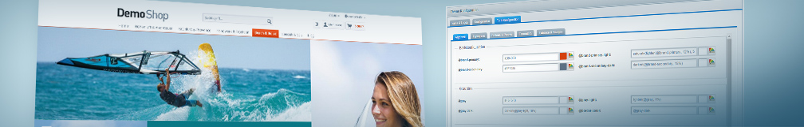

<ul class="guide-list is--numbered">
    <li><a href="{{ site.url }}/designers-guide/theme-startup-guide/">Theme Startup Guide</a></li>
    <li><a href="{{ site.url }}/designers-guide/getting-started/">Getting started with Shopware 5 Templating</a></li>
    <li><a href="{{ site.url }}/designers-guide/smarty/">Getting started with Smarty</a></li>
    <li><a href="{{ site.url }}/designers-guide/less/">Getting started with LESS</a></li>
    <li><a href="{{ site.url }}/designers-guide/css-and-js-files-usage/">Using CSS and JavaScript files in themes</a></li>
    <li><a href="{{ site.url }}/designers-guide/responsive-theme-default-components/">Using the Responsive theme default components</a></li>
    <li><a href="{{ site.url }}/designers-guide/javascript-statemanager-and-pluginbase">Getting Started with the statemanager and the jQuery plugin base</a></li>
    <li><a href="{{ site.url }}/designers-guide/configuration-using-theme-php/">Using the Theme.php for custom theme configuration</a></li>
    <li><a href="{{ site.url }}/designers-guide/preparing-themes-for-the-community-store/">Preparing themes for the community store</a></li>
</ul>

<div class="guide--forward">
    <p class="forward--info">Want to dive deeper?</p>
    <a href="{{ site.url }}/designers-guide/" class="forward--btn">Continue to frontend guides</a>
</div>
